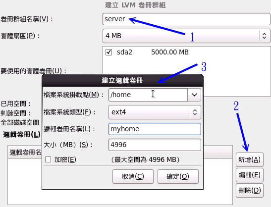

1.2 基本架设服务器流程
虽然不同的服务器提供的服务并不相同，而且每种服务的原理也不见得都一样，不过，每种服务器由规划、架设到后续的安全维护， 其实整个流程是大同小异的。什么？你不相信啊？为了让你相信，那我们就来一项一项的分析看看吧！
1.2.1 网络服务器成功联机的分析
底下我们就整个服务器的简易架设流程当中来分析一下，以了解为什么了解操作系统的基础对于网站维护是相当重要的呢？首先，到底我们是如何联机到服务器的？ 联机到服务器又取得啥咚咚？我们先以底下这张图示来作个简单的说明好了：
 图 1.2-1、网络联机至服务器所需经过的各项环节
图 1.2-1、网络联机至服务器所需经过的各项环节
先来理解一下，到底我们联机到服务器想要得到什么？举例来说，你联机到 Youtube 想要看影片，所以对方就提供影片串流数据给你； 你连到 Yahoo 想要看新闻，所以对方就提供新闻的文本文件给你；你联机到无名小站想要看美女，对方就传图档给你；你联机 Facebook 想要去种田，对方就参考你之前留下来的记录，从数据库里面将你的记录拿出来传给你。看到没有，你联机到服务器，重点在取得对方的数据， 而一般数据的存在就是使用档案啰！那你有没有权限取得？最终与该文件系统的设定有关啦！
上图显示的是：首先，客户端到服务器的网络要能够通，等到客户端到达服务器后，会先由服务器的防火墙判断该联机能否放行， 等到放行之后才能使用到服务器软件的功能。而该功能又得要通过 SELinux 这个细部权限设定的项目后，才能够读取到文件系统。 但能不能读到文件系统呢？这又跟文件系统的权限 (rwx) 有关啦！上述的每个部分都要能够成功，否则就无法顺利读取数据啰。
所以，根据上面的流程我们大概可以将整个联机分为几个部分，包括：网络、服务器本身、内部防火墙软件设定、各项服务配置文件、细部权限的 SELinux 以及最终最重要的档案权限。底下就分几个细项来谈谈啰。
网络：了解网络基础知识与所需服务之通讯协议
既然要架设服务器，首先当然得要了解一下因特网。因为不管是哪种操作系统，若想要与因特网联机，这个网络基础就得了解。 举例来说，『网域』是经常会谈到的概念，当你发现一个设定为 192.168.1.0/255.255.255.0 时，晓得那是什么鬼东西吗？ 如果不知道的话，呵呵！绝对无法设定好网站的啦！另外，为何你需要服务器？当然是想要达成某项网络服务。 举例来说，传输档案可以用 FTP，那 WWW 可以传递档案吗？网芳可以传递吗？各有何用处？哪个比较方便？ 对于客户或老板来说，我们所设定的服务能否满足他们的需求等等，这都需要了解，否则你将一头雾水啊！ 因此这部份你就得要了解：
- 基本的网络基础知识：包括以太网络硬件与协议、TCP/IP、网络联机所需参数等；
- 各网络服务所对应的通讯协议原理，以及各通讯协议所需对应的软件。
服务器本身：了解架网络服务器之目的以配合主机的安装规划
想要架设服务器吗？那...架什么服务器？这个服务器要不要对 Internet 开放？这个服务要不要针对客户提供相关账号？ 要不要针对不同的客户账号进行例如磁盘容量、可活动空间与可用系统资源进行限制？如果要进行各项资源的限制， 那服务器操作系统应该要如何安装与设定？问题很多吧！所以，先了解你要的服务器服务目的之后，后续的规划才能陆续出炉。 不过，如果架站只是为了『练功』而已，呵呵！那就不需要考虑太多了～
服务器本身：了解操作系统的基本操作
网络服务软件是需要建置在操作系统上面的，所以基本的操作系统操作就得要了解才行啊！包括软件如何安装与移除？ 如何让系统进行例行的工作管理？如何依据服务器服务之目的规划文件系统？如何让文件系统具有未来扩充性 (LVM 之类)？ 系统如何管理各项服务之启动？系统的开机流程为何？系统出错时，该如何进行快速复原等等，这都需要了解的呢！
内部防火墙设定：管理系统的可分享资源
一部主机可以拥有多种服务器软件的运作，而很多 Linux distributions 出厂的默认值就已经开放很多服务给 Internet 使用了，不过这些服务可能并不是你想要开放的呢。我们在了解网络基础与所需服务的目的之后， 接下来就是透过防火墙来规范可以使用本服务器服务的用户，以让系统在使用上拥有较佳的控管情况。 此外，不管你的防火墙系统设定的再怎么严格，只要是你要开放的服务， 那防火墙对于该服务就没有保护的效果。因此，那个重要的在线更新软件机制就一定要定期进行！否则你的系统将会非常非常的不安全！
服务器软件设定：学习设定技巧与开机是否自动执行
刚刚第一点就提到我们得要知道每种服务所能达成的功能，如此一来才能够架设你所需要的服务的网站。 那你所需要的服务是由哪个软件达成的？同一个服务可否有不同的软件？每种软件可以达成的目的是否相同？ 依据所需要的功能如何设定你的服务器软件？架设过程中如果出现错误，你该如何观察与除错？ 可否定期的分析服务器相关的登录信息，以方便了解该服务器的使用情况与错误发生的原因？ 能否通知多个用户进行联机测试，以取得较佳的服务器设定值？所以这里你可能就得要知道：
- 软件如何安装、如何查询相关配置文件所在位置；
- 服务器软件如何设定？
- 服务器软件如何启动？如何设定自动开机启动？如何观察启动的埠口？
- 服务器软件激活失败如何除错？如何观察登录档？如何透过登录档进行除错？
- 透过客户端进行联机测试，如果失败该如何处理？联机失败的原因是服务器还是防火墙？
- 服务器的设定修改是否有建立日志？登录档是否有定期分析？
- 服务器所提供或分享的数据有无定期备份？如何定期自动备份或异地备份？
细部权限设定：包括 SELinux 与档案权限
等到你的服务器全部设定妥当，最后你所提供的档案数据权限却是给了『 000 』的权限分数， 那鸟哥很肯定的说，大家都无法读到你所提供的数据啊...！此外，新的 distributions 都建议你要启动 SELinux ，那是什么咚咚？ 如果你的数据放置于非正规的目录，那该如何处理 SELinux 的问题？又如何让档案具有保密性或共享性 (档案权限概念与 ACL 等) 等等，这也都是需要厘清的观念喔！
上述的服务器架设流程中，其实除了第 5 点之外，其他步骤在各服务器设定都需要了解啊！而且都是一样的东西说！ 因此，这些基础如果学会了，最终，你只要知道第 5 点里面那个软件的基础设定，你的服务器一下子就可以设定完成啦！ 这样说，你是否开始觉得基础学习很重要啊！ ^_^
1.2.2 一个常见的服务器设定案例分析
上面讲完后或许你还是不很清楚到底这些技能如何串起来？鸟哥这里提供一个简单的案例来分析一下好了， 这样你应该就比较容易清楚的知道为何需要学习这些咚咚。
- 网络环境：假设你的环境里面 (不管是家里还是宿舍) 共有五部计算机，这五部计算机需要串接在一起，且都可以对外联机；
- 对外网络：你的环境只有一个对外的联机方式，这里假设是台湾较流行的 ADSL 或 10M 的光纤这种透过电话线拨接的类型；
- 额外服务：你想要让这五部计算机都可以上网，而且其中还有一部可以做为网络驱动器机，提供同学或家人作为数据备份与分享之用；
- 服务器管理：由于你可能需要进行远程管理，因此你这部服务器得要开放联机机制，以让远程计算机可以联机到这部主机来进行维护；
- 防火墙管理：因为担心这部做为档案分享服务器的系统被攻击，因此你需要针对 IP 来源进行登入权力的控制；
- 账号管理：另外，由于同学的数据有隐密与共享之分，因此你还得要提供每个同学个别的账号， 且每个账号都有磁盘容量的使用限制；
- 后端分析：最后，由于担心系统出问题所以你得要让系统自动定期分析磁盘使用量、登录文件参数信息等等。
在上述的环境中，你要考虑的东西有哪些呢？依据本小节一开始谈到的六个步骤来分析的话，你可能需要底下这些咚咚喔！
1.2.2-1 了解网络基础
- 硬件规划
我们想要将五部计算机串接在一块，但是却又只有一个可以对外的联机，此时就得要购买集线器 (hub) 或者是交换器 (switch) 来串接所有的计算机了。但是这两者有何不同？为何 switch 比较贵？我们知道网络线被称为 RJ-45 的网络线， 但网络线材竟然有等级之分，这个等级要怎么分辨？不同等级的线材速度有没有差异？等到这些硬件基础了解之后， 你才能够针对你的环境来进行联机的设计。这部份我们等到下一章再来介绍。
- 联机规划
由于只有一条对外联机而已，因此通常我们就建议你可以用如下的方式来串接你的网络：
 图 1.2-2、硬件的网络联机示意图
图 1.2-2、硬件的网络联机示意图
透过 IP 分享器，我们的五部计算机就都能够上网了。此时你得要注意，能否上网与 Internet 有关，Internet 就是那有名的 TCP/IP 通讯协议，而想要了解网络就得要知道啥是 OSI 七层协定。我们也知道能连上 Internet 与所谓的 IP 有关，那么我们内部这五部计算机所取得的 IP 能不能拿来架站？也就是说， IP 有没有不同种类？ 如果 IP 分享器突然挂了，那你的这五部计算机能不能联机玩魔兽？这就考虑你的网络参数设定问题了！
- 网络基础
如果你的同学或家人跑来跟你说，网络不通哩！你直觉会是什么？硬件问题？软件问题？还是啥莫名其妙的问题？ 如果你不懂网络基础的 IP 相关参数，包括路由设定以及领域名系统 (DNS) 的话，肯定不知道怎么进行联机测试的。 所以啰，此时你就会被骂说：『怎么都不懂还想要管理我们家网络』...那时不是很糗吗？所以要学好一些嘛！ 这部份就很复杂了，包括 TCP/IP, Network IP, Netmask IP, Broadcast IP, Gateway, DNS IP 等等，都需要理解喔！
了解了这些原理之后，你才能够进行除错 (debug) 的工作，否则，错误一出，你可能就会被骂的臭头的！ 最常见的错误中，举例来说，如果你的主机明明就可以使用 ping 这个指令去接触远方的主机 (ping IP)，但是就是无法使用 ping hostname 去接触远方的主机，请问，这个原因是什么呢？了解网络基础的朋友一看就知道几乎是 DNS 出问题了，不晓得的朋友就是想破头也得不到答案。既然知道出问题的地方，就能够针对该问题去处理嘛！
网络基础会影响到你的网络设定是否正确，这真的很重要吶，因为，如果你的网络不通，那么即使服务器架设成功了， 别人可以看的到吗？所以说，要架站，真的得对网络基础的部分下一些功夫才行的。关于网络基础这部份我们在基础篇并没有谈过， 所以我们会在下一章网络基础时再详加说明喔！
1.2.2-2 服务器本身的安装规划与架站目的的搭配
如同图 1.2-2 所示，Server 端是在那五部计算机之中，而且 Server 必须要提供针对不同账号给予网络驱动器机，我们这边会提供网芳 (SAMBA) 这个服务，因为他可以在 Linux/Windows 之间通用之故。 且由于需要提供账号给使用者，以及想到未来的磁盘扩充情况，因此我们想要将 /home 独立出来，且使用 LVM 这个管理模式， 并搭配 Quota 机制来控制每个账号的磁盘使用量。
所以说，你得知道 Linux 目录下的 FHS (Filesystem Hierarchy Standard) 的规范，否则分割槽给到错误的目录，会造成无法开机！那为什么要将 /home 独立放入一个分割槽？ 那是因为 quota 仅支持 filesystem 而不支持单一目录啊！好了，如果给你一部全新的主机，那你该如何安装你的系统呢？
实作题-全新安装：请到昆山科大 (http://ftp.ksu.edu.tw/FTP/CentOS/), 义守大学 (http://ftp.isu.edu.tw/pub/Linux/CentOS/) 或国家高速网络中心 (http://ftp.twaren.net/Linux/CentOS/ ) 下载最新的 Linux 映像档来刻录 (2011/07 可下载最新版为 CentOS 6.0)，并且依据上述的需求安装好你的 Linux 系统 (最重要的其实就是那个分割而已，其他的动作可以在安装完成后再说)。答：由于 Linux 的安装我们已经在基础篇内的第四章介绍过了，这里我们不再使用图形接口来说明， 仅使用文字说明来介绍你在每个项目应该处理的动作而已。此外，由读者们的响应发现，学习者经常只有一部主机， 因此，这里我们建议你使用 Virtualbox (http://www.virtualbox.org/) 来仿真出一部实体主机，以安装你的测试环境。并请注意， 这部主机将会使用在本书的各个章节测试中。
Virtualbox 的安装与设定请自行参考其官网上面的 Documentation 介绍，这里不再赘言。只是需要注意的是， 若 (1)需要架设网站来上网，建议网络使用桥接模式 (bridge) ，且网络卡类型使用 Intel 的桌面计算机类型即可。 (2)由于我们未来会教导 NAT 服务器，因此最好有两张网卡，一张使用 bridge 一张使用内网 (intnet) 较佳。 而 (3)磁盘配置建议使用 SATA 类型，且容量请给予 25GB 以上。 (4)内存至少该给予 512MB 以上，最好有 1GB 来测试。 其他的请参考官网文件，或者使用默认配置即可。当然啦，如果你有独立的实体机器来安装，那就更好了！ 不需理会这一小段文字的说明喔。
默认配置如下：
- 分割表请依如下方式进行：
- / + : 2GB
- /boot: 200MB
- /usr : 4GB
- /var : 2GB
- /tmp : 1GB
- swap : 1GB
- /home: 5GB，并且使用 LVM 模式建置
- 其他容量请保留，未来再来进行额外练习！
- 软件挑选时，请选择『 basic server 』项目即可；
- 信息安全部分，防火墙选择启动，SELinux 选择强制 (Enforce)；
- 假设 IP 分享器有自动分配 IP 的功能，所以网络参数先选择 DHCP 即可，未来再自己修改。
实际流程大致如下 (鸟哥以 CentOS 6.0 为例说明)
- 由于我们使用光驱开机来安装系统，因此得先进入 BIOS ，选择光驱开机，并且将 CentOS 6.x 的 DVD 放入光驱中；
- 在启动安装的画面中，选择『Install or upgrade an existing system』来安装新系统；
- 出现『 Disc Found 』字样，此时建议可以选择『 Skip 』即可略过；
- 在欢迎画面以鼠标点选『 Next 』；
- 语系数据可以选择『Chinese(Traditional)(中文(正体))』；
- 键盘格式保留『美式英文』即可；
- 安装包含的装置类型，直接选择默认的『基本储存装置』即可；
- 因为我们是全新的硬盘，因此会出现一个找不到分割表的错误，此时选择『重新初始化』即可；
- 进入网络主机名的设定，先保留『localhost.localdomain』即可。 同画面中还有一个『配置网络』的选项，我们先不要动他！等未来谈到网络设定再来处理即可；
- 进入时区选择，请选择『亚洲/台北』即可；
- 出现 root 密码制作，这里我们先设定为『 centos 』吧！ 这个密码太简单，系统会出现警告，你选择『照样使用』即可。你也可以自行设定其他密码；
- 出现哪一类型安装的模式，因为我们有自己的分割考虑，所以，请选择『建立自定义分割格式』来处理喔！
在出现分割画面中，先点选『sda』项目，然后点选『建立』的按钮，在出现的窗口中， 再点选『标准分割区』项目，然后点『建立』。 在最后的窗口中填写挂载点、容量等信息后，最终按下『确定』即可。最终画面有点像这样：
 图 1.2-3、分割的参数下达示意图
图 1.2-3、分割的参数下达示意图依据前面的分割规划，持续进行上述的动作，将所有的分割都处理完毕，除了 /home 之外。
由于 /home 想要使用 LVM 的方式来建立文件系统，因此点选『建立』后，选择『LVM 实体卷册』项目，按下建立，在出现的分割窗口中容量填写 5GB，示意图有点像这样：
 图 1.2-4、分割出 LVM 分割槽的方式
图 1.2-4、分割出 LVM 分割槽的方式接下来回到原本的分割画面后，按下『建立』并选择『LVM 卷册群组』项目， 在出现的窗口中，卷册组名填写『server』，并且在右下方的逻辑卷册部分按下『新增』， 又会额外出现一个窗口，此时就填入 /home 的相关参数啦！注意，逻辑卷册我们这里设定为 myhome 喔！ 画面有点像底下这样：
 图 1.2-5、建立最终的 LVM 的 LV 与 /home
回到原本的分割画面，最终的显示有点像底下这样，然后请按下『下一步』继续。 但由于新建分割需要格式化，所以又会出现一个警告窗口！没问题的，选择『格式化』以及『将变更写至磁盘』吧！
 图 1.2-6、分割的最终结果
图 1.2-6、分割的最终结果出现启动加载程序作业，都使用默认值即可，请按『下一步』；
- 出现安装类型，因为我们主机的角色为服务器，因此选择『Basic Server』项目！ 其他项目保留默认，然后按下『下一步』就开始进行安装程序啰！
- 经过一段时间的等待，出现重新启动后，你就重新启动吧！喔！要记得将 DVD 拿出来喔！(怪异的是，鸟哥第一次安装后， 竟然发现电源管理有问题，得在 kernel 处增加 noapic 才能顺利开机呢！)
- 装好并重新启动后，就会进入 runlevel 3 的纯文本界面！因为是服务器嘛！
1.2.2-3 服务器本身的基本操作系统操作
既然我们这部主机得要提供不同账号来使用他们自己的网络驱动器，因此还需要建立账号啊，使用磁盘配额 (quota) 等等的。 那么你会不会建立账号呢？你会不会建置共享目录呢？你能不能处理每个账号的 Quota 配额呢？如果 /home 的容量不足了， 你会不会放大 /home 的容量呢？有没有办法将系统的磁盘使用情况定期的发送邮件给管理员呢？这些都是基本的维护行为喔！ 我们底下就以几个实际例子来练习看看你的基础能力吧！
例题-大量建置账号：假设我的五个朋友账号分别是 vbirduser{1,2,3,4,5}，且这五个朋友未来想要共享一个目录，因此应该要加入同一个群组，假设这个群组为 vbirdgroup，且这五个账号的密码均为 password 。那该如何建置这五个账号？答：你可以写一支脚本程序来进行上述的工作喔！
[root@localhost ~]# mkdir bin
[root@localhost ~]# cd /root/bin
[root@localhost bin]# vim useradd.sh
#!/bin/bash
groupadd vbirdgroup
for username in vbirduser1 vbirduser2 vbirduser3 vbirduser4 vbirduser5
do
useradd -G vbirdgroup $username
echo "password" | passwd --stdin $username
done
[root@localhost bin]# sh useradd.sh
[root@localhost bin]# id vbirduser1
uid=501(vbirduser1) gid=502(vbirduser1) groups=502(vbirduser1),501(vbirdgroup)
context=root:system_r:unconfined_t:SystemLow-SystemHigh
最后利用 id 这个指令来查询看看，是否群组的支持是对的啊！
例题-共享目录的权限：这五个朋友的共享目录建置于 /home/vbirdgroup 这个目录，这个目录只能给这五个人使用，且每个人均可于该目录内进行任何动作！ 若有其他人则无法使用 (没有权限)，那该如何建置这个目录的权限呢？答：考虑到共享目录，因此目录需要有 SGID 的权限才行！否则个别群组数据会让这五个人彼此间无法修改对方的数据的。因此需要这样做：
[root@localhost ~]# mkdir /home/vbirdgroup
[root@localhost ~]# chgrp vbirdgroup /home/vbirdgroup
[root@localhost ~]# chmod 2770 /home/vbirdgroup
[root@localhost ~]# ll -d /home/vbirdgroup
drwxrws---. 2 root vbirdgroup 4096 2011-07-14 14:49 /home/vbirdgroup/
# 上面特殊字体的部分就是你需要注意的部分啰！特别注意那个权限的 s 功能喔！
例题-Quota 实作：假设这五个用户均需要进行磁盘配额限制，每个用户的配额为 2GB (hard) 以及 1.8GB (soft)，该如何处理？答：这一题实作比较难，因为必须要包括文件系统的支持、quota 数据文件建置、quota 启动、建立用户 quota 信息等过程。 整个过程在基础篇有讲过了，这里很快速的带领大家进行一次吧！
# 1\. 启动 filesystem 的 Quota 支持
[root@localhost ~]# vim /etc/fstab
UUID=01acf085-69e5-4474-bbc6-dc366646b5c8 / ext4 defaults 1 1
UUID=eb5986d8-2179-4952-bffd-eba31fb063ed /boot ext4 defaults 1 2
/dev/mapper/server-myhome /home ext4 defaults,usrquota,grpquota 1 2
UUID=605e815f-2740-4c0e-9ad9-14e069417226 /tmp ext4 defaults 1 2
....(底下省略)....
# 因为是要处理用户的磁盘，所以找到的是 /home 这个目录来处理的啊！
# 另外，CentOS 6.x 以后，默认使用 UUID 的磁盘代号而非使用文件名。
# 不过，你还是能使用类似 /dev/sda1 之类的档名啦！
[root@localhost ~]# umount /home; mount -a
[root@localhost ~]# mount | grep home
/dev/mapper/server-myhome on /home type ext4 (rw,usrquota,grpquota)
# 做完使用 mount 去检查一下 /home 所在的 filesystem 有没有上述的字眼！
# 2\. 制作 Quota 数据文件，并启动 Quota 支持
[root@localhost ~]# quotacheck -avug
quotacheck: Scanning /dev/mapper/server-myhome [/home] done
....(底下省略)....
# 会出现一些错误的警告信息，但那是正常的！出现上述的字样就对了！
[root@localhost ~]# quotaon -avug
/dev/mapper/server-myhome [/home]: group quotas turned on
/dev/mapper/server-myhome [/home]: user quotas turned on
# 3\. 制作 Quota 数据给用户
[root@localhost ~]# edquota -u vbirduser1
Disk quotas for user vbirduser1 (uid 500):
Filesystem blocks soft hard inodes soft hard
/dev/mapper/server-myhome 20 1800000 2000000 5 0 0
# 因为 Quota 的单位是 KB ，所以这里要补上好多 0 啊！看的眼睛都花了！
[root@localhost ~]# edquota -p vbirduser1 vbirduser2
# 持续作几次，将 vbirduser{3,4,5} 通通补上去！
[root@localhost ~]# repquota -au
*** Report for user quotas on device /dev/mapper/server-myhome
Block grace time: 7days; Inode grace time: 7days
Block limits File limits
User used soft hard grace used soft hard grace
----------------------------------------------------------------------
root -- 24 0 0 3 0 0
vbirduser1 -- 20 1800000 2000000 5 0 0
vbirduser2 -- 20 1800000 2000000 5 0 0
vbirduser3 -- 20 1800000 2000000 5 0 0
vbirduser4 -- 20 1800000 2000000 5 0 0
vbirduser5 -- 20 1800000 2000000 5 0 0
# 看到没？上述的结果就是有发现到设定的 Quota 值啰！整个流程就是这样！
例题-文件系统的放大 (LVM)：纯粹假设的，我们的 /home 不够用了，你想要将 /home 放大到 7GB 可不可行啊？答：因为当初就担心这个问题，所以 /home 已经是 LVM 的方式来管理了。此时我们要来瞧瞧 VG 够不够用，如果够用的话， 那就可以继续进行。如果不够用呢？我们就得要从 PV 着手啰！整个流程可以是这样来观察的。
# 1\. 先看看 VG 的量够不够用：
[root@localhost ~]# vgdisplay
--- Volume group ---
VG Name server
System ID
Format lvm2
....(中间省略)....
VG Size 4.88 GiB <==只有区区 5G左右
PE Size 4.00 MiB
Total PE 1249
Alloc PE / Size 1249 / 4.88 GiB
Free PE / Size 0 / 0 <==完全没有剩余的容量了！
VG UUID SvAEou-2quf-Z1Tr-Wsdz-2UY8-Cmfm-Ni0Oaf
# 真惨！已经没有多余的 VG 容量可以使用了！因此，我们得要增加 PV 才行。
# 2\. 开始制作出所需要的 partition 吧！作为 PV 用的！
[root@localhost ~]# fdisk /dev/sda <==详细流程我不写了！自己瞧
Command (m for help): p
Device Boot Start End Blocks Id System
....(中间省略)....
/dev/sda8 1812 1939 1024000 83 Linux <==最后一个磁柱
Command (m for help): n
First cylinder (1173-3264, default 1173): 1940 <==上面查到的号码加 1
Last cylinder, +cylinders or +size{K,M,G} (1940-3264, default 3264): +2G
Command (m for help): t
Partition number (1-9): 9
Hex code (type L to list codes): 8e
Command (m for help): p
Device Boot Start End Blocks Id System
/dev/sda9 1940 2201 2104515 8e Linux LVM <==得到 /dev/sda9
Command (m for help): w
[root@localhost ~]# partprobe <==在虚拟机上面得要 reboot 才行！
# 3\. 将 /dev/sda9 加入 PV，并将该 PV 加入 server 这个 VG 吧
[root@localhost ~]# pvcreate /dev/sda9
[root@localhost ~]# vgextend server /dev/sda9
[root@localhost ~]# vgdisplay
....(前面省略)....
VG Size 6.88 GiB <==这个 VG 最大就是 6.88G 啦
....(中间省略)....
Free PE / Size 513 / 2.00 GiB <==有多出 2GB 的容量可用了！
# 4\. 准备加大 /home，开始前，还是先观察一下才增加 LV 容量较好！
[root@localhost ~]# lvdisplay
--- Logical volume ---
LV Name /dev/server/myhome <==这是 LV 的名字！
VG Name server
....(中间省略)....
LV Size 4.88 GiB <==只有 5GB 左右，需要增加 2GB 啰
....(底下省略)....
# 看起来，是需要增加容量啰！我们使用 lvresize 来扩大容量吧！
[root@localhost ~]# lvresize -L 6.88G /dev/server/myhome
Rounding up size to full physical extent 6.88 GiB
Extending logical volume myhome to 6.88 GiB <==处理完毕啰！
Logical volume myhome successfully resized
# 看来确实是扩大到 6.88GB 啰！开始处理文件系统吧！
# 5\. 扩大文件系统
[root@localhost ~]# resize2fs /dev/server/myhome
resize2fs 1.41.12 (17-May-2010)
Filesystem at /dev/server/myhome is mounted on /home; on-line resizing required
old desc_blocks = 1, new_desc_blocks = 1
Performing an on-line resize of /dev/server/myhome to 1804288 (4k) blocks.
The filesystem on /dev/server/myhome is now 1804288 blocks long.
[root@localhost ~]# df -h
文件系统 Size Used Avail Use% 挂载点
/dev/mapper/server-myhome
6.8G 140M 6.4G 3% /home
....(其他省略)....
# 可以看到文件系统确实有放大到 6.8G 喔！这样了解了吗？
做完上面的实作之后，现在你晓得为什么在基础篇的时候，我们一直强调一些有的没有的了吧？因为那些东西在这里都用的上！ 如果本章这些题目你都不会，甚至连为什么要作这些东西都不懂的话，那得赶紧回去阅读基础篇，不要再念下去了！ 会非常非常辛苦的呦！
1.2.2-4 服务器内部的资源管理与防火墙规划
你可知道本章第一个实作题安装好了你的 Linux 之后，系统到底开放了多少服务呢？这些服务有没有对外面的世界开放监听？ 这些服务有没有漏洞或者是能不能进行网络在线更新？这些服务如果没有要用到，能不能关闭？此外， 这些服务能不能仅开放给部分的来源使用而不是对整个 Internet 开放？这都是需要了解的呢。 底下我们就以几个小案例来让你了解一下，到底哪些数据是你必须要熟悉的呢？
例题-不同 runlevel 的服务控管：在目前的 runlevel 之下，取得预设启动的服务有哪些呢？此外，我的系统目前不想启动自动网络挂载 (autofs) 机制，我不想要启动该服务的话，该如何处理？答：默认的 runlevel 可以使用 runlevel 这个指令来处理，那我们预设使用 3 号的 runlevel，因此你可以这样做：
[root@localhost ~]# LANG=C chkconfig --list | grep '3:on'
上面指令的输出讯息中，会有 autofs 服务是在启动的状态，如果想要关闭他，可以这样做：
[root@localhost ~]# chkconfig autofs off
[root@localhost ~]# /etc/init.d/autofs stop
上面提到的仅只是有启动的服务，如果我想要了解到启动监听 TCP/UDP 封包的服务 (网络封包格式下章会谈到)，那该如何处理？ 可以参考底下这个练习题喔！
例题-查询启动在网络监听的服务我想要检查目前我这部主机启动在网络端口监听的服务有哪些，并且关闭不要的程序，该如何进行？答：网络监听的端口分析，可以使用如下的方式分析到：
[root@localhost ~]# netstat -tulnp
Active Internet connections (only servers)
Proto Recv-Q Send-Q Local Address Foreign Address State PID/Program name
tcp 0 0 0.0.0.0:111 0.0.0.0:* LISTEN 1005/rpcbind
tcp 0 0 0.0.0.0:22 0.0.0.0:* LISTEN 1224/sshd
tcp 0 0 127.0.0.1:25 0.0.0.0:* LISTEN 1300/master
tcp 0 0 0.0.0.0:35363 0.0.0.0:* LISTEN 1023/rpc.statd
tcp 0 0 :::111 :::* LISTEN 1005/rpcbind
tcp 0 0 :::22 :::* LISTEN 1224/sshd
tcp 0 0 ::1:25 :::* LISTEN 1300/master
tcp 0 0 :::36985 :::* LISTEN 1023/rpc.statd
udp 0 0 0.0.0.0:5353 0.0.0.0:* 1108/avahi-daemon:
udp 0 0 0.0.0.0:58474 0.0.0.0:* 1108/avahi-daemon:
....(底下省略)....
现在假设我想要关闭 avahi-daemon 这个服务以移除该服务启动的埠口时，应该要如同上题一样， 利用 /etc/init.d/xxx stop 关闭，再使用 chkconfig 去处理开机不启动的行为！不过，因为启动的服务名称与实际指令可能不一样， 我们在 netstat 上面看到的 program 项目是实际软件执行文件，可能与 /etc/init.d/ 底下的服务档名不同，因此可能需要使用 grep 去撷取数据， 或者透过那好棒的 [tab] 按键去取得相关的服务档名才行。
[root@localhost ~]# /etc/init.d/avahi-daemon stop
[root@localhost ~]# chkconfig avahi-daemon off
我们常常会开玩笑说，如果对外开放的软件没有更新，那防火墙不过是个屁！所以啦，软件更新是相当重要的。 在 CentOS 内，我们已经有 yum 来进行在线更新了，你当然可以自己利用更改配置文件来指定 yum 要去查询的映像站 (mirror site)，不过这里鸟哥建议使用预设的设定值即可，因为系统会主动的判断较近的映像站 (虽然常常会误判)， 不需要人工微调啦！
例题-利用 yum 进行系统更新假设你的网络已经通了，目前你想要处理全系统更新，同时需要每天凌晨 2:15 自动进行全系统更新，该如何作？答：全系统更新使用 yum update 即可。但是由于 yum update 需要使用者手动输入 y 去确认真的要安装，因此在 crontab 里头处理相关任务时， 就得要使用 yum -y update 了！
[root@localhost ~]# yum -y update
# 第一次作会进行非常之久！因为系统真的有些数据要更新嘛！还是得等待的！
[root@localhost ~]# vim /etc/crontab
15 2 * * * root /usr/bin/yum -y update
不过这里还是要额外提醒各位喔，如果你的系统有更新过核心 (kernel) 这个软件，务必要重新启动啊！因为核心是在开机时载入的， 一经加载就无法在这次的操作中更改版本的。
那个 crontab 档案的处理，以及 crontab -e 的指令应用，内容的写法字段不太一样，请自行参考基础篇的说明去加强学习喔！
在通过了上述的各项设定后，我们的 Linux 系统应该是比较稳定些了，再接着下来，我们要开始来设定资源的保护了！ 例如 ssh 这个远程可登入的服务得要限制住可登入的 IP 来源，以及制订防火墙规则流程等。 这部份则是本教学文件后续要着重介绍的部分，留待后面章节再来谈吧！
Tips: 程序设计师所撰写的程序并非十全十美的，所以，总是可能有些地方没有设计好，因此就造成所谓的『程序漏洞』啰。 程序漏洞所造成的问题有大有小，小问题可能是造成主机的当机，大问题则可能造成主机的机密数据外流， 或者主机的操控权被 cracker 取得。在现今网络发达的年代，程序的漏洞问题是造成主机被攻击、入侵的最主要因素之一了。 因此，快速、有效的针对程序漏洞进行修补，是一个很重要的维护课题。

1.2.2-5 服务器软件设定：学习设定技巧与开机是否自动执行
这部份就是整个服务器架设篇的重要内容了！前一小节也曾谈过，在服务器架设部分你得要熟悉相当多的信息， 否则未来维护会显的很麻烦。我们以本章提到的大前提为例，我们想要提供一个网络驱动器机，那么网络驱动器机使用的机制有哪些呢？ 常见的除了网页形式的分享磁盘之外，还有常见的网芳以及 Linux 的 NFS 方式 (后面章节都会继续谈到)。
由于假设局域网络内的操作系统大部分是 Windows 好了，因此网芳应该是个比较合理的磁盘分享选择。 那么网芳到底启动了多少个埠口？是如何持续提供网芳数据的？提供的账号有没有限制？提供的权限该如何设定？ 是否可规定谁可登入某些特定目录？针对网芳服务的埠口该如何设定防火墙？如果系统出错该如何查询错误信息？ 这个网芳在 Linux 底下要使用什么服务来达成？这都是需要学习的呢！
直接告诉你，网芳的制作在 Linux 底下是由 Samba 这套软件来达成的。Samba 的详细设定我们会在后续章节介绍。 这里要告诉你的是， 架设一个网芳服务器，你应该要会的基础知识有哪些？以及告诉你，你可以背下来的架设流程中， 理论上应该要经过哪些步骤的过程，这样对你未来处理服务器设定时，才会有点帮助啊！
软件安装与查询
刚刚我们已经知道网芳需要安装的是 Samba 这套软件，那么该如何查询有没有安装呢？如果没有安装又该如何安装呢？ 那就来处理处理。
例题：查出你的系统底下有没有 samba 这套软件，若无，请自行查询与安装该软件答：已安装的软件可以使用 rpm 去察看看，尚未安装的则使用 yum 功能。所以可以这样进行看看：
[root@localhost ~]# rpm -qa | grep -i samba samba-common-3.5.4-68.el6_0.2.x86_64 samba-client-3.5.4-68.el6_0.2.x86_64 samba-winbind-clients-3.5.4-68.el6_0.2.x86_64 # 看起来 samba 主程序尚未被安装啊！此时就要这样做： [root@localhost ~]# yum search samba <==先查一下有没有相关的软件 [root@localhost ~]# yum install samba <==找到之后，那就安装吧！ # 那么如何找出配置文件呢？因为我们总是需要修改配置文件啊！这样做吧： [root@localhost ~]# rpm -qc samba samba-common /etc/logrotate.d/samba /etc/pam.d/samba /etc/samba/smbusers /etc/samba/lmhosts /etc/samba/smb.conf /etc/sysconfig/samba服务器主设定与相关设定
这部份可就麻烦了！因为你得要了解到，你到底需要的服务是什么，针对该服务需要设定的项目有哪些？ 这些设定需要用到什么指令或配置文件等等。一般来说，你得要先察看这个服务的通讯协议是啥，然后了解该如何设定， 接下来编辑主配置文件，根据主配置文件的数据去执行相对应的指令来取得正确的环境设定。以我们这里的网芳为例， 我们需要设定工作组，然后需要设定可以使用网芳的身份为非匿名，接下来就能够开始处理主配置文件。 因此你需要有：
- 先使用 vim 去编辑 /etc/samba/smb.conf 配置文件；
- 利用 useradd 建立所需要的网芳实体用户；
- 利用 smbpasswd 建立可用网芳的实体帐户；
- 利用 testparm 测试一下所有数据语法是否正确；
- 检查看看在网芳内分享的目录权限是否正确。 这些设定都搞定之后，才能够继续进行启动与观察的动作呦！而想要了解更多关于 samba 的相关设定技巧与应用， 除了 google 大神之外， /usr/share/doc 内的文件，以及 man 这个好用的家伙都必须要去阅读一番！
服务器的启动与观察
在设定妥当之后，接下来当然就是启动该服务器了。一般服务器的启动大多是使用 stand alone 的模式， 如果是比较少用的服务，如 telnet ，就比较有可能使用到 super daemon 的服务启动类型。我们这里依旧使用 samba 为例， 来瞧瞧如何启动他吧！
例题：如何启动 samba 这个服务呢？并且设定好开机就启动他！答：想要了解如何启动，得要使用 rpm 去找一下软件的启动方式，然后再去处理启动的行为啰！
# 先查询一下启动的方式为何： [root@localhost ~]# rpm -ql samba | grep '/etc' /etc/logrotate.d/samba /etc/openldap/schema /etc/openldap/schema/samba.schema /etc/pam.d/samba /etc/rc.d/init.d/nmb /etc/rc.d/init.d/smb <==所以说是 stand alone 且档名为 smb, nmb 两个！ /etc/samba/smbusers # 开始启动他！且设定开机就启动喔！： [root@localhost ~]# /etc/init.d/smb start [root@localhost ~]# /etc/init.d/nmb start [root@localhost ~]# chkconfig smb on [root@localhost ~]# chkconfig nmb on # 接下来，让我们观察一下有没有启动相关的埠口吧！ [root@localhost ~]# netstat -tlunp | grep '[sn]mbd' tcp 0 0 :::139 :::* LISTEN 1484/smbd tcp 0 0 :::445 :::* LISTEN 1484/smbd udp 0 0 0.0.0.0:137 0.0.0.0:* 1492/nmbd udp 0 0 0.0.0.0:138 0.0.0.0:* 1492/nmbd最终我们可以看到启动的埠口有 137, 138, 139, 445 喔！
客户端的联机测试
接下来就是要找一部机器做为客户端，然后尝试使用本机器提供的网芳功能啊！这样才能够了解设定是对还是错！ 相关的客户端联机与服务器提供的服务有关，例如 WWW 服务器就要使用 browser 去测试，网芳当然就得要使用网芳客户端程序啰！这部份也是本服务器篇要讲的基本内容啦！
但是很多时刻，客户端联机测试不成功并非是服务器设定的问题，很多是客户端使用方式不对！ 包括客户端自己的防火墙没开啦，客户端的账号权限密码等等记错啦等等的，问题很大啦！ 总体来说：『教育你的 Client 使用者具有最最基础的 Linux 账号、群组、档案权限等概念，才是一个彻底解决问题的方法』，但这也是最难的部分...
错误克服与观察登录档
一般来说，如果 Linux 上面的服务出现问题时，通常会在屏幕上面直接告诉你错误的原因为何，所以你得要注意屏幕讯息。 老实说，屏幕讯息通常就已经告诉你该如何处理了。如果还不能处理呢？你可以这样处置看看：
- 先看看相关登录文件有没有错误讯息，举例来说， samba 除了会在 /var/log/messages 里面列出讯息外， 大部分的讯息应该是摆放在 /var/log/samba/ 这个目录下的数据，因此你就得先去查阅一番。通常在登录文件内的信息， 会比在屏幕上的还要仔细，那你就可以自行处理完毕了；
- 将讯息带入 Google 查询，通常可以解决登录档出现的但是你没有办法克服的问题喔！达标率可达 95% 以上吧！
- 还是不成功，那就到各大讨论区去发问吧！建议到酷学园 (http://phorum.study-area.org) 最常出现的其实是 SELinux 的错误啦！此时就得要使用 SELinux 的方法来尝试处理啰！ 这也是本服务器篇后续会稍微提到的内容。
经过上面的流程，你就可以知道啦，架设好一部主机需要知道：(1)各个 process 与 signal 的观念；(2)账号与群组的观念与相关性；(3)档案与目录的权限，这当然包含与账号相关的特性； (4)软件管理员的学习；(5)BASH 的语法与 shell scripts 的语法，还有那个很重要的 vim 啰！：(6)开机的流程分析，以及记录登录文件的设定与分析；(7)还得知道类似 quota 以及连结档等等的概念。要知道的真的很多，而且还是不能省略的步骤喔！
1.2.2-6 细部权限与 SELinux
如果有些特殊的使用情况时，权限设定就是个很重要的因素。举例来说，我们系统上面，现在有 vbirduser{1,2,3,4,5} 以及 student 等账号，而共享目录为 /home/vbirdgroup。现在， vbirdgroup 的群组想要让 student 这个用户可以进入该共享目录查阅， 但是不能够更改他们原本的数据，你该如何进行呢？你或许可以这样想：
让 student 加入 vbirdgroup 群组即可：但如此一来， student 具有 vbirdgroup 的 rwx 权限，也就可以写入与修改啰， 因此这个方案行不通。
将 /home/vbirdgroup 的权限改为 2775 即可：如此一来 student 拥有其他人的权限 (rx)，但如此一来其他所有任何人均拥有 rx 权限，这个方案也行不通。
传统的身份与权限概念就只有上面两种解决方案而已，这下子严重了！我们没有办法针对 student 进行权限设定！ 此时就得要使用 ACL 啰～同样这个例子，我们就来实作一下：
例题-单一用户、群组的权限设定 ACL想要让 student 可以进入 /home/vbirdgroup 进行查询，但不可写入。同时 vbirduser5 在 /home/vbirdgroup 内， 不具有任何权限。答：只能使用 ACL 啰！由于安装时预设格式化就加上 acl 的文件系统功能支持，因此你可以直接处理如下的各项指令。 如果你是使用后来新增的 partition 或 filesystem ，或许得要在 /etc/fstab 内额外增加 acl 控制参数才行喔！
[root@localhost ~]# useradd student
[root@localhost ~]# passwd student
[root@localhost ~]# setfacl -m u:student:rx /home/vbirdgroup
[root@localhost ~]# setfacl -m u:vbirduser5:- /home/vbirdgroup
[root@localhost ~]# getfacl /home/vbirdgroup
# file: home/vbirdgroup
# owner: root
# group: vbirdgroup
# flags: -s-
user::rwx
user:vbirduser5:---
user:student:r-x <==就是这两行，额外的权限参数哩！
group::rwx
mask::rwx
other::---
[root@localhost ~]# ll -d /home/vbirdgroup
drwxrws---+ 2 root vbirdgroup 4096 2011-07-14 14:49 /home/vbirdgroup
上面说的是正确的权限控制行为。那万一系统管理员不是个东西...不是啦！系统管理员并不知道权限的重要性时， 常常会因为某些特殊需求，就将整个目录设定为 777 的情况！举例来说，如果是一个不怎么想要负责的网管人员， 为了自己方便、大家方便，就将 /home/vbirdgroup 设定为 777 ，这样『大家欢喜』嘛！此时，如果你没有加上任何管理机制， 嘿嘿！这个群组成员工作的成果，通通可以被大家所窃取，真是要命了！
为了预防这种心不在焉的管理员，于是就有了 SELinux 这个玩意儿。SELinux 主要在控制细部的权限， 他可以针对某些程序要读取的档案来设计 SELinux 类别，当程序与档案的类别形态可以相符合时，该档案才能够开始被读取。 如此一来，当你配置文件案权限为 777 ，但是因为程序与档案的 SELinux 例行不符，所以没关系的，因为该程序还是读不到该档案！ 所以我们在图 1.2-1 才会将 SELinux 的图示绘制到 daemon 与 file permission 中间啊！
事实上 SELinux 还挺复杂的，但是我们如果仅是想要应用而已，那么 SELinux 的处理方式通通可以透过登录档来处置！ 所以 SELinux 出现问题的机会非常大，但是解决技巧却很简单！就是透过登录档内的说明去作即可。 详细的作法我们在后续章节再持续说明吧！
1.2.3 系统安全与备份处理
老实说，在鸟哥管理服务器的经验来说，硬件问题要比操作系统与软件问题还来的严重，而人的问题又比硬件问题严重！ 举例来说，如果你的老板跟你说：『我要的账号是 eric ，而且我的密码也要是 eric ！这样比较好记嘛！』 你应该要怎么处理呢？『果然需要再教育』！教育谁？教育自己啦！是要忍耐还是要说服老板别这样～好讨厌的感觉吧！
因此，在系统安全方面，首要的工作是透过日常生活的社交活动中，慢慢透露一些资安方面的困扰， 并提供老板一些制订资安规则方面的信息，这样未来比较好鼓吹资安条件的制订。我们就先由严格的密码来建议吧：
『猜密码』仍是一个不可忽视的入侵手段！例如 SSH 如果对 Internet 开放的话，你又没有将 root 的登入权限关闭，那么对方将可能以 root 尝试登入你的 Linux 主机，这个时候对方最重要的步骤就是猜出你 root 的密码了！如果你 root 的密码设定成『1234567』哈哈！想不被入侵都很难～ 所以当然需要严格的规范用户密码的设定了！那么如何规范严格的密码规则呢？可以藉由 (1)修改 /etc/login.defs 档案里面的规则，以让用户需要每半年更改一次密码，且密码长度需要长于 8 个字符呢！(2)利用 /etc/security/limits.conf 来规范每个使用者的相关权限，让你的 Linux 可以较为安全一点点～(3)利用 pam 模块来额外的进行密码的验证工作。
另外，虽然『防火墙无用论』常常被提及，但是 netfilter (Linux 的核心内建防火墙) 其实仍有他存在的必要。 因此你还是得就要你自己的主机环境来设计专属于自己的防火墙规则，例如上面提到的 SSH 服务中， 你可以仅针对某个局域网络或某个特定 IP 开放联机功能即可啊！
最后，备份是不可忽略的一环。本节开头就讲到了，鸟哥遇过常常莫名其妙自动重开机或系统不稳的，经常都不是被攻击， 而是硬件内部的电子零件老化所造成的系统不稳定...此时，异地备援啦、备用机器的接管理等等的，就很重要啰！ 而你总不想要因为硬盘挂点导致数据『害害去』，所以啰，备份就真他X的重要啰！
例题：系统上比较重要的目录有 /etc, /home, /root, /var/spool/mail 等，你现在想要在每天 2:45am 进行备份，且备份数据存到 /backup 内， 备份的举动使用 tar ，那该如何处理？答：鸟哥通常是使用 shell script 来进行备份数据的汇整，范例如下：
[root@localhost ~]# mkdir /root/bin; vim /root/bin/backup.sh
#!/bin/bash
backdir="/etc /home /root /var/spool/mail"
basedir=/backup
[ ! -d "$basedir" ] && mkdir $basedir
backfile=$basedir/backup.tar.gz
tar -zcvf $backfile $backdir
[root@localhost ~]# vim /etc/crontab
45 2 * * * root sh /root/bin/backup.sh
无论如何，以现今的网络功能及维护来看，架设一个『功能性强』的主机， 还不如架设一个『稳定且安全的主机』比较好一点！因此，对于主机的安全要求就需要严格的要求啦！就鸟哥的观点来看， 如果你的主机是用来替你赚钱的，例如某些研究单位的大型 Cluster 运算主机， 那么即使架设一个甚至让你觉得很不方便的防火墙系统，都是合理的手段！因为主机被入侵就算了，若数据被窃取，呵呵！ 那可不是闹着玩的！
由上面的整个架站流程来看，由规划到安装、主机设定、账号与档案权限管理、后续安全性维护与管理以及重要的备份工作等等， 必需要每个环节都很清楚，才能够设定出一个较为稳定而可正常工作的服务器。而上面的每一个工作都涉及到相当多的 Linux 基础操作与相关的概念，所以说，想要学架站，真的真的不能省略了 Linux 的基础学习， 这也是为什么我们一再强调 Linux 新手不要一头栽入想要单纯架设服务器的迷思当中吶！ 如果你对于上面谈到的几个基础概念不是很清楚的话，那么建议你由底下的两个网站学起：